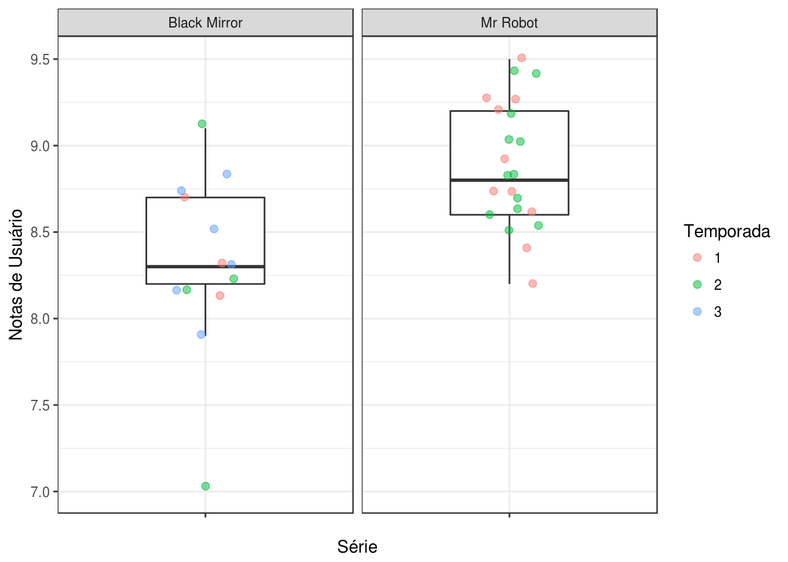

dados = read_csv(here("content/dados/series_from_imdb.csv"),
progress = FALSE,
col_types = cols(.default = col_double(),
series_name = col_character(),
episode = col_character(),
url = col_character(),
season = col_character())) %>% filter(series_name %in% c("Black Mirror", "Mr Robot"))
series <- dados %>% group_by(series_name) %>%
summarise(n = n()) Qual das séries que você escolheu é mais bem avaliada no IMDB? A diferença é grande? Pequena? Muda de acordo com as temporadas da série?
boxplot.user_ratings <- dados %>%
ggplot(aes(x = "", y = user_rating)) +
geom_boxplot(width = .4, outlier.color = NA) +
facet_wrap(~ series_name) +
geom_jitter(width = .1, size = 2, alpha = .5, aes(color = season)) +
labs('Série mais bem avaliada IMDB', x = 'Série', y = 'Notas de Usuário', color = 'Temporada')
boxplot.user_ratings
Considero a série mais bem avaliada como sendo a com maior mediana. Então temos a série Black Mirror com mediana = 8.3 e a série Mr Robot com mediana = 8.8. A diferença não é grande, chegando a maior diferença de 0.6 entre a mediana da 2ª temporada de ambas as séries. Algo interessante é que na 2 temporada de Black Mirror temos tanto o episódio mais bem avaliado quanto o episódio pior avaliado, sendo o episódio White Christmas com nota 9.1 e o eposódio The Waldo Moment com nota 7.0.
Qual das séries que você escolheu tem episódios de qualidade mais irregular segundo o IMDB? A diferença é grande? Pequena?
line.user_ratings <- dados %>%
ggplot(aes(x = season_ep, y = user_rating, color = season, group = season)) +
geom_line() +
geom_point() +
facet_wrap(~ series_name) +
labs('Série mais bem avaliada IMDB', x = 'Episódio', y = 'Notas de Usuário', color = 'Temporada')
line.user_ratingsPodemos ver que Mr Robot não possui uma variação muito notável nas notas de seus episódios, já em Black Mirror é possível notar que a 2ª e 3ª temporada possuem um episódio, em cada, que tem uma qualidade bem mais inferior que o restante dos episódios. Inclusive, temos na 2ª temporada o episódio pior avaliado e em seguida temos o melhor avaliado da série, com uma diferença de aproximadamente 2.0(The Waldo Moment tem uma nota 22% menor que a nota do episódio White Christmas.
Assim, Black Mirror tem uma qualidade mais irregular de episódios. Como assisto a série, posso dizer que isso se aplica devido ao fato que os episódios da série são independentes, ou seja, cada um tem a sua história com ínicio, meio e fim. Assim alguns roteiros se destacam muito mais em relação a outros, nem sempre a série consegue manter um nível muito alto, como em White Christmas (meu episódio favorito da série).
Extras
Qual das séries ou temporadas tem episódios mais sem graça? (Um episódio é sem graça se ninguém nem ama nem odeia ele)
odiado.r1 <- dados %>%
ggplot(aes(x = season_ep, y = r1, color = series_name)) +
geom_point() +
geom_smooth(method = lm) +
facet_grid(series_name ~ season) +
scale_x_continuous(breaks = 1:12) +
labs('Episódio mais odiado', x = 'Episódio', y = 'Prop. de notas 1', color = 'Série')
odiado.r1amado.r10 <- dados %>%
ggplot(aes(x = season_ep, y = r10, color = series_name)) +
geom_point() +
geom_smooth(method = lm) +
facet_grid(series_name ~ season) +
scale_x_continuous(breaks = 1:12) +
labs('Episódio mais amado', x = 'Episódio', y = 'Prop. de notas entre 10', color = 'Série')
amado.r10Podemos ver os como se comportam a proporções de episódios mais amados e mais odiados nas séries. Mr Robot tem uma correlação muito baixa, os episódios da série tendem a manter um nível que agrada os fãs de forma geral. Diferente de Black Mirror que tem uma variação maior, porém possui menos episódios para uma melhor análise.
meh.r5 <- dados %>%
ggplot(aes(x = season_ep, y = r5, color = series_name)) +
geom_point() +
geom_smooth(method = lm) +
facet_grid(series_name ~ season) +
scale_x_continuous(breaks = 1:12)
meh.r5dados <- dados %>% mutate(meh = r4 + r5 + r6) # meh = soma das proporções entre r4, r5 e r6
meh.bar <- dados %>%
ggplot(aes(x = season_ep, y = meh, fill = meh)) +
geom_bar(stat="identity") +
facet_grid(series_name ~ season) +
scale_x_continuous(breaks = 1:12) +
labs('Episódio mais sem graça', x = 'Episódio', y = 'Prop. de notas entre 4-6', fill = 'Temporada')
meh.barCondiderei um episódio sem graça (meh) aquele que possui a maior proporção de notas entre 4 e 6. Descobrimos aqui que o 2° episódio da 2ª temporada de Black Mirror é o episódio mais sem graça das duas séries. Foi algo inexperado para mim, pensei que o episódio pior avaliado (o 3º episódio da 2ª temporada) teria uma proporção de ‘meh’ maior do que os outros, porém a proporção de ‘meh’ dele está bem parecida com a de outros episódios. Por outro lado temos o episódio mais bem avaliado de Black Mirror com menor ‘meh’ da série.
Episódios no início/fim da temporada são mais bem avaliados que os no meio? O que tende a ser melhor? Inícios ou finais de séries/temporadas?
inicio.geral <- dados %>%
group_by(series_name) %>%
filter(season_ep == 1)
inicio.geral$tipo <- rep(0,nrow(inicio.geral))
fim.mrrobot.1 <- dados %>%
filter(season_ep == 10, season == 1, series_name == 'Mr Robot')
fim.mrrobot.2 <- dados %>%
filter(season_ep == 10, season == 2, series_name == 'Mr Robot')
fim.blackmirror.1 <- dados %>%
filter(season_ep == 3, season == 1, series_name == 'Black Mirror')
fim.blackmirror.2 <- dados %>%
filter(season_ep == 4, season == 2, series_name == 'Black Mirror')
fim.blackmirror.3 <- dados %>%
filter(season_ep == 6, season == 3, series_name == 'Black Mirror')
fim.geral <- rbind(fim.blackmirror.1, fim.blackmirror.2, fim.blackmirror.3, fim.mrrobot.1, fim.mrrobot.2)
fim.geral$tipo <- rep(1,nrow(fim.geral))
dados.inicio.fim <- rbind.data.frame(inicio.geral, fim.geral)
dados.ggplot <- dados.inicio.fim %>%
ggplot(aes(x = tipo, y = user_rating, color = season)) +
geom_line() +
geom_point() +
facet_wrap(~ series_name) +
scale_x_continuous(breaks = 0:1) +
labs('Pilot x Season Finale', x = 'Pilot(0) x Season Finale(1)', y = 'Notas de Usuário', color = 'Temporada')
dados.ggplotNa série Black Mirror o início da temporada tende a ser pior que o final da temporada. Já para Mr Robot temos que a primeira temporada tem um início melhor que o seu final.